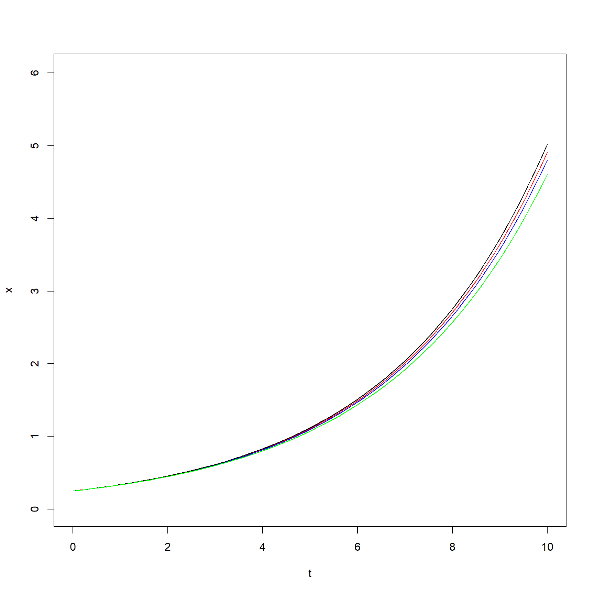
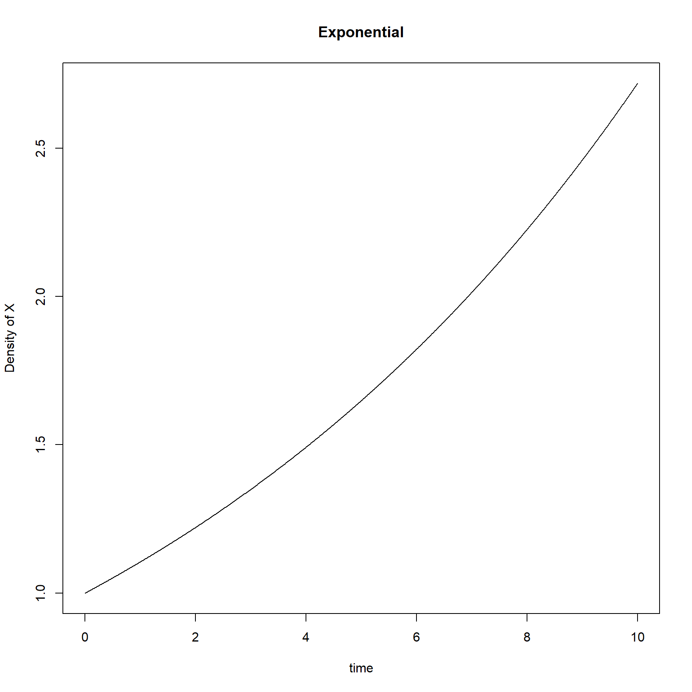
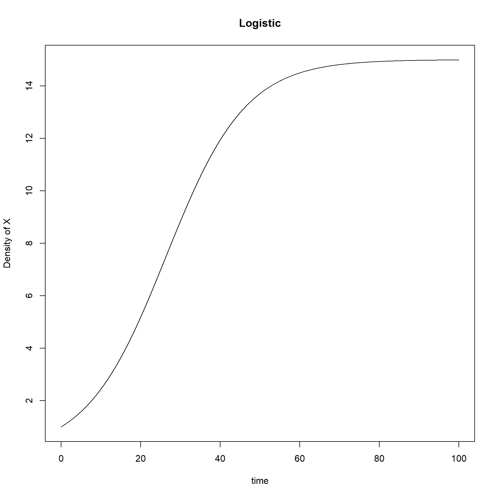
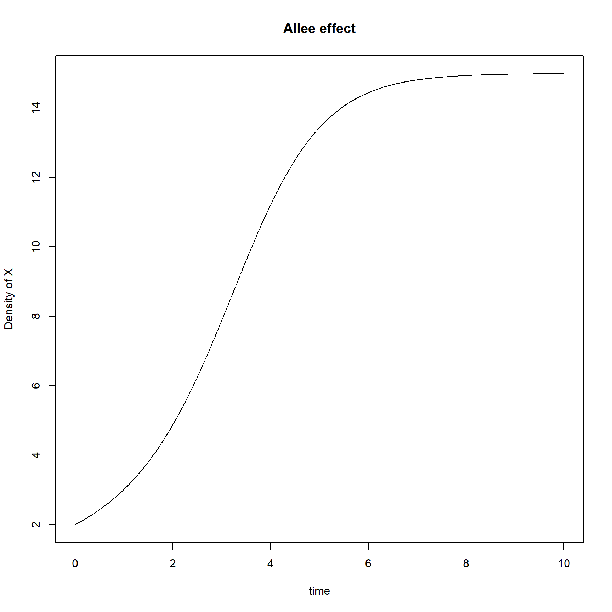

Homework1
KiseokUChicago
2021-01-22
Last updated: 2021-01-26
Checks: 7 0
Knit directory: Theoretical_ecology_HW/
This reproducible R Markdown analysis was created with workflowr (version 1.6.2). The Checks tab describes the reproducibility checks that were applied when the results were created. The Past versions tab lists the development history.
Great! Since the R Markdown file has been committed to the Git repository, you know the exact version of the code that produced these results.
Great job! The global environment was empty. Objects defined in the global environment can affect the analysis in your R Markdown file in unknown ways. For reproduciblity it’s best to always run the code in an empty environment.
The command set.seed(20210122) was run prior to running the code in the R Markdown file. Setting a seed ensures that any results that rely on randomness, e.g. subsampling or permutations, are reproducible.
Great job! Recording the operating system, R version, and package versions is critical for reproducibility.
Nice! There were no cached chunks for this analysis, so you can be confident that you successfully produced the results during this run.
Great job! Using relative paths to the files within your workflowr project makes it easier to run your code on other machines.
Great! You are using Git for version control. Tracking code development and connecting the code version to the results is critical for reproducibility.
The results in this page were generated with repository version b22c74c. See the Past versions tab to see a history of the changes made to the R Markdown and HTML files.
Note that you need to be careful to ensure that all relevant files for the analysis have been committed to Git prior to generating the results (you can use wflow_publish or wflow_git_commit). workflowr only checks the R Markdown file, but you know if there are other scripts or data files that it depends on. Below is the status of the Git repository when the results were generated:
Ignored files:
Ignored: .Rhistory
Ignored: .Rproj.user/
Note that any generated files, e.g. HTML, png, CSS, etc., are not included in this status report because it is ok for generated content to have uncommitted changes.
These are the previous versions of the repository in which changes were made to the R Markdown (analysis/Homework1.Rmd) and HTML (docs/Homework1.html) files. If you’ve configured a remote Git repository (see ?wflow_git_remote), click on the hyperlinks in the table below to view the files as they were in that past version.
| File | Version | Author | Date | Message |
|---|---|---|---|---|
| Rmd | b22c74c | KiseokUChicago | 2021-01-26 | update_homework |
| html | ddb1ba5 | KiseokUChicago | 2021-01-22 | Build site. |
| Rmd | 53eacdb | KiseokUChicago | 2021-01-22 | publish |
| html | 9832572 | KiseokUChicago | 2021-01-22 | Build site. |
| Rmd | 88c7e17 | KiseokUChicago | 2021-01-22 | publish |
| html | c33e856 | KiseokUChicago | 2021-01-22 | Build site. |
| Rmd | d4ffd83 | KiseokUChicago | 2021-01-22 | publish |
Homework1
Coding assignment for ECEV 42900
Professor: Sarah Cobey Greg Dwyer Student: Kiseok Lee
Exercise 6. The Ricker Model and Bifurcation diagram. Repeat the analysis of the fixed point for the Ricker Model:
This is the provided script to make bifurcation plot for the logistic map
## Bifurcation.R
## Stefano Allesina sallesina@uchicago.edu allesinalab.uchicago.edu
## Code for "Theoretical Ecology"
## This function returns the values of the min and max
peaks <- function(x) {
if (min(x)==max(x)) return(min(x)) ## Does not oscillate
l <- length(x)
xm1 <- c(x[-1], x[l])
xp1 <- c(x[1], x[-l])
z<-x[x > xm1 & x > xp1 | x < xm1 & x < xp1]
if (length(z)==0) return(min(x)) ## It has not converged yet
return (z)
}
## This function creates a simulation of the logistic map
LogisticMap<-function(N0,r,TimeSteps){
Results<-rep(0,TimeSteps)
Results[1]<-N0
for (j in 2:TimeSteps){
Results[j]<-r*Results[j-1]*(1-Results[j-1])
}
return(Results)
}
## Plot the Diagram
plot(0,0, xlim=c(0,4), ylim=c(-0.05,1.05),type="n", xlab="r", ylab="X")
for (r in seq(0.001,4,0.005)) { # These are the initial and final values for r
out <- LogisticMap(0.5,r,2500) # Initial conditions
l <- length(out) %/% 10 # use only the last 250 steps
out <- out[(9*l):(10*l)]
p <- peaks(out)
l <- length(out)
points(rep(r, length(p)), p, pch=".")
}Make new function for Ricker model
## This function creates a simulation of the logistic map
RickerModel<-function(N0,r,TimeSteps,b){
Results<-rep(0,TimeSteps)
Results[1]<-N0
for (j in 2:TimeSteps){
Results[j]<-r*Results[j-1]*exp(-b*Results[j-1])
}
return(Results)
}
## Plot the Diagram with b fixated (4 different values)
par(mfrow=c(2,2))
b_vec <- c(0.5, 2, 4, 8)
r_end <- 20
for (b in b_vec){
plot(0,0, xlim=c(0,r_end), ylim=c(-0.05,1.05),type="n", xlab="r", ylab="X")
for (r in seq(0.001,r_end,0.005)) { # These are the initial and final values for r
out <- RickerModel(0.5,r,2500,b) # Initial conditions
l <- length(out) %/% 10 # use only the last 250 steps
out <- out[(9*l):(10*l)]
p <- peaks(out)
l <- length(out)
points(rep(r, length(p)), p, pch=".")
}
} Ricker model is: N(t+1)=rN(t)e^(-bN(t))
Ricker model is: N(t+1)=rN(t)e^(-bN(t))
From the top left to bottom right, b value is 0.5, 2, 4(bottom left), 8(bottom right). We can see first bifurcations around r=1 in all 4 graphs.
Exercise 7. Numerical integration.
Integrate the exponential growth and the logistic growth using as initial condition t = 0,N(0) = 0.25 until t = 10.
Plot the error at time t = 10 as a function of the step-size (using delta t = (0.05, 0.1, 0.2)).
This is the provided script to make Euler method approximations on dN/dt = rN (exponential growth)
library(ggplot2)
library(ggthemes)
ExponentialGrowth<-function(x,lambda){
return (lambda*x)
}
Euler<-function(x, D, FUN,lambda){
return(x+FUN(x,lambda)*D)
}
ExponentialSolution<-function(N0,t,lambda){
return (N0*exp(t*lambda))
}
# dev.off()
N0<-0.25
lambda<-0.3
plot(c(0,0),col="0",xlim=c(0,10),ylim=c(0,(N0*exp(lambda*10)+1)), xlab='t', ylab='x')
for (Deltat in c(0.05,0.1,0.2)){
PointsToEstimate<-seq(0,10,by=Deltat)
Iterations<-length(PointsToEstimate)-1
Approx<-rep(0,Iterations+1)
RealSol<-rep(0,Iterations+1)
Approx[1]<-RealSol[1]<-N0
for (i in 1:Iterations){
RealSol[i+1]<-ExponentialSolution(N0,Deltat*i,lambda)
Approx[i+1]<-Euler(Approx[i],Deltat,ExponentialGrowth,lambda)
}
if (Deltat==0.05) mycol="red"
if (Deltat==0.1) mycol="blue"
if (Deltat==0.2) mycol="green"
points(RealSol~PointsToEstimate,col="black",type="l")
points(Approx~PointsToEstimate,col=mycol,type="l")
}
# error at time t=10 as a function of step-size
get_error <- function(Deltat=0.05, t=10){
PointsToEstimate<-seq(0,10,by=Deltat)
Iterations<-length(PointsToEstimate)-1
Approx<-rep(0,Iterations+1)
RealSol<-rep(0,Iterations+1)
Approx[1]<-RealSol[1]<-N0
for (i in 1:Iterations){
RealSol[i+1]<-ExponentialSolution(N0,Deltat*i,lambda)
Approx[i+1]<-Euler(Approx[i],Deltat,ExponentialGrowth,lambda)
}
return (RealSol[t] - Approx[t])
}
get_error(0.05, 10)[1] 0.0002867022df_1 <- data.frame(deltat=c(0.05, 0.1, 0.2), error=NA)
df_1$error <- sapply(df_1$deltat,get_error)
df_1 deltat error
1 0.05 0.0002867022
2 0.10 0.0012978167
3 0.20 0.0066319758ggplot(df_1, aes(x=deltat, y=error)) + geom_point() + theme_hc() +
ggtitle("Error at t=10 in different stepsizes(0.05, 0.1, 0.2)")Add the function to logistic growth I increased the error time t=10 to t=30 in order to better see the plateau.
LogisticGrowth<-function(x,lambda){
return (lambda*x*(1-x))
}
LogisticSolution<-function(N0,t,lambda){
return ( (N0*exp(t*lambda)) / ( 1+N0*(exp(t*lambda)-1) ) )
}
# dev.off()
N0<-0.25
lambda<-0.3
plot(c(0,0),col="0",xlim=c(0,30),ylim=c(0,(N0*exp(lambda*2)+1)), xlab='t', ylab='x')
for (Deltat in c(0.05,0.1,0.2)){
PointsToEstimate<-seq(0,30,by=Deltat)
Iterations<-length(PointsToEstimate)-1
Approx<-rep(0,Iterations+1)
RealSol<-rep(0,Iterations+1)
Approx[1]<-RealSol[1]<-N0
for (i in 1:Iterations){
RealSol[i+1]<-LogisticSolution(N0,Deltat*i,lambda)
Approx[i+1]<-Euler(Approx[i],Deltat,LogisticGrowth,lambda)
}
if (Deltat==0.05) mycol="red"
if (Deltat==0.1) mycol="blue"
if (Deltat==0.2) mycol="green"
points(RealSol~PointsToEstimate,col="black",type="l")
points(Approx~PointsToEstimate,col=mycol,type="l")
}The Euler’s estimation of logistic growth model works well. The red/blue/green line almost aligns with the black line, which is the real solution of the logistic growth model.
Exercise 8. More numerical integration!
Using the code below as a template, write functions that integrate the exponential, logistic, Allee, Levins, and theta-logistic ODE models we saw in this chapter using deSolve.
## ExpGrowth.R
## Stefano Allesina sallesina@uchicago.edu allesinalab.uchicago.edu
## Code for "Theoretical Ecology"
require(deSolve)
## package for integrating numerically ODEs see
##http://cran.r-project.org/web/packages/deSolve/Plot the dynamics over time. Specify which parameter values you use, and label everything.
(1) exponential ODE model
## This function takes a step in time
ExponentialGrowth<-function(t, state, parameters) {
X <- state[1] ## the first element is the density of X at time t
r <- parameters[1] ## the first parameter is the growth rate
dX<-r*X
return(list(dX)) ## for some reason, you have to return a list
}
## This function runs the model and produces the trajectory
RunExponentialGrowth <- function(MaxTime=10, GrowthRate=0.1, InitialX=1.0, title='Exponential'){
times <- seq(0, MaxTime, by = 0.01)
parameters <- c(r=GrowthRate)
state <- c(X=InitialX)
out <- ode(y = state, times = times, func = ExponentialGrowth, parms = parameters)
print(plot(out[,2]~out[,1],type="l",xlab="time",ylab="Density of X", main=title))
# return(out)
}
RunExponentialGrowth()
NULL(2) logistic model
## This function takes a step in time
LogisticGrowth<-function(t, state, parameters) {
X <- state[1] ## the first element is the density of X at time t
r <- parameters[1] ## the first parameter is the growth rate
K <- parameters[2]
dX<-r*X*(1-(X/K))
return(list(dX)) ## for some reason, you have to return a list
}
## This function runs the model and produces the trajectory
RunLogisticGrowth <- function(MaxTime=100, GrowthRate=0.1, InitialX=1.0, Carrying_capa=15, title='Logistic'){
times <- seq(0, MaxTime, by = 0.01)
parameters <- c(r=GrowthRate, K=Carrying_capa)
state <- c(X=InitialX)
out <- ode(y = state, times = times, func = LogisticGrowth, parms = parameters)
print(plot(out[,2]~out[,1],type="l",xlab="time",ylab="Density of X", main=title))
# return(out)
}
RunLogisticGrowth()
NULL(3) Allee effect model
## This function takes a step in time
AlleeGrowth<-function(t, state, parameters) {
X <- state[1] ## the first element is the density of X at time t
u <- parameters[1] ## the first parameter is the growth rate
c <- parameters[2]
v <- parameters[3]
dX<- X*( (u*X/(v+X))-c*X )
return(list(dX)) ## for some reason, you have to return a list
# u = 2, c = 0.1, and v = 5.
}
## This function runs the model and produces the trajectory
RunAlleeGrowth <- function(MaxTime=10, InitialX=2, u=2, c=0.1, v=5, title='Allee effect'){
times <- seq(0, MaxTime, by = 0.01)
parameters <- c(u=u, c=c, v=v)
state <- c(X=InitialX)
out <- ode(y = state, times = times, func = AlleeGrowth, parms = parameters)
print(plot(out[,2]~out[,1],type="l",xlab="time",ylab="Density of X", main=title))
# return(out)
}
RunAlleeGrowth()
NULL(4) Levins model
## This function takes a step in time
LevinsGrowth<-function(t, state, parameters) {
X <- state[1] ## the first element is the density of X at time t
c <- parameters[1] ## the first parameter is the growth rate
dX<- c*X*(1-X) - exp(1)*X
return(list(dX)) ## for some reason, you have to return a list
}
## This function runs the model and produces the trajectory
RunLevinsGrowth <- function(MaxTime=10, c=1, InitialX=1.0, title='Levins'){
times <- seq(0, MaxTime, by = 0.01)
parameters <- c(c=c)
state <- c(X=InitialX)
out <- ode(y = state, times = times, func = LevinsGrowth, parms = parameters)
print(plot(out[,2]~out[,1],type="l",xlab="time",ylab="Density of X", main=title))
# return(out)
}
RunLevinsGrowth()NULL(5) theta-logistic ODE model
## This function takes a step in time
ThetaLogisticGrowth<-function(t, state, parameters) {
X <- state[1] ## the first element is the density of X at time t
r <- parameters[1] ## the first parameter is the growth rate
K <- parameters[2]
theta <- parameters[3]
dX<- r*X*( 1 - (X/K)^theta)
return(list(dX)) ## for some reason, you have to return a list
}
## This function runs the model and produces the trajectory
RunThetaLogisticGrowth <- function(MaxTime=30, r=.25, K=10, theta = 1, InitialX=1.0, title='ThetaLogistic'){
times <- seq(0, MaxTime, by = 0.01)
parameters <- c(r=r, K=K, theta=theta)
state <- c(X=InitialX)
out <- ode(y = state, times = times, func = ThetaLogisticGrowth, parms = parameters)
print(plot(out[,2]~out[,1],type="l",xlab="time",ylab="Density of X", main=title))
# return(out)
}
# plot for 3 different theta value as Exercise 3
par(mfrow=c(3,1))
for (th in c(0.5, 1, 1.5)){
RunThetaLogisticGrowth(theta=th)
}NULLNULLNULL
sessionInfo()R version 4.0.3 (2020-10-10)
Platform: x86_64-w64-mingw32/x64 (64-bit)
Running under: Windows 10 x64 (build 19042)
Matrix products: default
locale:
[1] LC_COLLATE=English_United States.1252
[2] LC_CTYPE=English_United States.1252
[3] LC_MONETARY=English_United States.1252
[4] LC_NUMERIC=C
[5] LC_TIME=English_United States.1252
attached base packages:
[1] stats graphics grDevices utils datasets methods base
other attached packages:
[1] deSolve_1.28 ggthemes_4.2.4 ggplot2_3.3.3 workflowr_1.6.2
loaded via a namespace (and not attached):
[1] Rcpp_1.0.5 pillar_1.4.7 compiler_4.0.3 later_1.1.0.1
[5] git2r_0.27.1 tools_4.0.3 digest_0.6.27 evaluate_0.14
[9] lifecycle_0.2.0 tibble_3.0.4 gtable_0.3.0 pkgconfig_2.0.3
[13] rlang_0.4.10 rstudioapi_0.13 yaml_2.2.1 xfun_0.20
[17] withr_2.3.0 stringr_1.4.0 dplyr_1.0.2 knitr_1.30
[21] generics_0.1.0 fs_1.5.0 vctrs_0.3.6 rprojroot_2.0.2
[25] grid_4.0.3 tidyselect_1.1.0 glue_1.4.2 R6_2.5.0
[29] rmarkdown_2.6 farver_2.0.3 purrr_0.3.4 magrittr_2.0.1
[33] whisker_0.4 scales_1.1.1 promises_1.1.1 ellipsis_0.3.1
[37] htmltools_0.5.0 colorspace_2.0-0 httpuv_1.5.4 labeling_0.4.2
[41] stringi_1.5.3 munsell_0.5.0 crayon_1.3.4